MoStream · runtime standard
Cosa è stato cambiato, perché, e cosa mostrano FarmThroughput e PipelineGrain
Communicator estraeva i messaggi con un ciclo di try_pop e non usava mai il pop bloccante di Rigtorp, basato su un solo fetch_add.pop() usa il pop bloccante della coda. Il runtime cooperativo resta invariato. La scelta avviene in compilazione, con il parametro explicit_eos del Communicator.In MoStream due stadi consecutivi comunicano attraverso un Communicator: una coda MPMC limitata condivisa fra le repliche dello stadio che scrive (i produttori, pN) e quelle dello stadio che legge (i consumatori, cN). La coda si sceglie in compilazione: Vyukov di default, Rigtorp con -D MOSTREAM_RIGTORP=1.
Entrambe le code sono implementate come MPMC (più produttori e più consumatori). L'uso effettivo dipende dalla topologia: in FarmThroughput la coda è usata come SPMC (un produttore, N consumatori), in PipelineGrain come SPSC (un produttore e un consumatore per coda). Le configurazioni MPSC e MPMC, con più produttori sulla stessa coda, compaiono nei test di correttezza ma non sono state misurate nelle campagne di prestazioni.
Le due code differiscono soprattutto nel modo in cui un consumatore prenota la posizione da leggere:
| Vyukov | Rigtorp | |
|---|---|---|
pop() bloccante | ciclo sul proprio try_pop: lettura e CAS, da ripetere se un altro consumatore arriva prima | un solo fetch_add per prendere un ticket, poi attesa sulla propria cella: nessun ritentativo, nessuna gara |
try_pop() | lettura e CAS RELAXED | lettura e CAS SEQUENTIAL in un ciclo: stessa logica di Vyukov, con un'operazione più costosa |
Quando molti consumatori si contendono la stessa coda, il fetch_add di Rigtorp evita le CAS fallite. Per questo nei benchmark harness, dove i consumatori chiamano pop(), Rigtorp vinceva fino a 1,9×. Nella prima campagna dentro MoStream invece le due code risultavano equivalenti, e con contesa Vyukov era perfino avanti del 7%.
Prima della modifica, FarmThroughput e PipelineGrain sono stati misurati dentro MoStream con il Communicator originale (campagna del 5 novembre, 4.000 misure). I parametri sono gli stessi della campagna successiva, descritti nel capitolo 6. Come riferimento c'è la campagna harness del 15 ottobre: stessa macchina, stessi carichi, ma con le code chiamate direttamente da task dedicati, senza runtime.
L'attesa era che il comportamento delle due code si ritrovasse anche dentro MoStream. Non è stato così.
Esiti con il Communicator vecchio: Rigtorp: 1, Vyukov: 6, non distinguibile: 13. Con quello nuovo: Rigtorp: 7, Vyukov: 1, differenza < 5%: 1, non distinguibile: 11.
| N | T µs | Harness (code chiamate direttamente) | MoStream, Communicator vecchio | MoStream, Communicator nuovo | ||||||
|---|---|---|---|---|---|---|---|---|---|---|
| R/V | IC 95% | esito | R/V | IC 95% | esito | R/V | IC 95% | esito | ||
| 1 | 0 | 1,14 | 1,06–1,21 | Rigtorp | 1,07 | 1,02–1,10 | Rigtorp | 1,03 | 0,99–1,09 | non distinguibile |
| 2 | 0 | 1,29 | 1,25–1,36 | Rigtorp | 0,95 | 0,91–1,00 | Vyukov | 0,86 | 0,82–0,91 | Vyukov |
| 4 | 0 | 0,92 | 0,90–0,95 | Vyukov | 0,93 | 0,91–0,98 | Vyukov | 0,98 | 0,93–1,05 | non distinguibile |
| 8 | 0 | 1,17 | 1,14–1,20 | Rigtorp | 0,93 | 0,89–0,96 | Vyukov | 1,17 | 1,11–1,25 | Rigtorp |
| 16 | 0 | 1,46 | 1,44–1,48 | Rigtorp | 0,95 | 0,86–1,02 | non distinguibile | 1,41 | 1,30–1,48 | Rigtorp |
| 1 | 1 | 0,99 | 0,98–1,00 | differenza < 5% | 1,00 | 0,96–1,04 | non distinguibile | 0,99 | 0,96–1,02 | non distinguibile |
| 2 | 1 | 1,00 | 0,96–1,08 | non distinguibile | 0,99 | 0,97–1,04 | non distinguibile | 1,03 | 0,99–1,06 | non distinguibile |
| 4 | 1 | 1,44 | 1,41–1,51 | Rigtorp | 0,99 | 0,96–1,03 | non distinguibile | 1,13 | 1,08–1,16 | Rigtorp |
| 8 | 1 | 1,56 | 1,50–2,76 | Rigtorp | 0,93 | 0,89–0,97 | Vyukov | 1,30 | 1,18–1,40 | Rigtorp |
| 16 | 1 | 1,92 | 1,88–1,97 | Rigtorp | 0,93 | 0,87–0,99 | Vyukov | 1,49 | 1,39–1,58 | Rigtorp |
| 1 | 2 | 0,99 | 0,93–1,04 | non distinguibile | 1,01 | 0,99–1,07 | non distinguibile | 1,00 | 0,98–1,01 | non distinguibile |
| 2 | 2 | 0,99 | 0,97–1,04 | non distinguibile | 1,03 | 1,00–1,08 | non distinguibile | 1,02 | 1,01–1,04 | differenza < 5% |
| 4 | 2 | 1,09 | 1,04–1,13 | Rigtorp | 1,03 | 1,00–1,08 | non distinguibile | 1,02 | 0,97–1,07 | non distinguibile |
| 8 | 2 | 1,58 | 1,53–1,64 | Rigtorp | 1,01 | 0,96–1,05 | non distinguibile | 1,09 | 1,04–1,15 | Rigtorp |
| 16 | 2 | 1,90 | 1,86–1,94 | Rigtorp | 0,93 | 0,90–0,98 | Vyukov | 1,47 | 1,31–1,55 | Rigtorp |
| 1 | 5 | 1,00 | 0,99–1,00 | non distinguibile | 1,00 | 0,99–1,00 | non distinguibile | 1,00 | 0,99–1,01 | non distinguibile |
| 2 | 5 | 0,98 | 0,97–1,00 | differenza < 5% | 1,02 | 1,00–1,05 | non distinguibile | 1,01 | 1,00–1,05 | non distinguibile |
| 4 | 5 | 1,01 | 0,99–1,03 | non distinguibile | 1,00 | 0,99–1,02 | non distinguibile | 1,01 | 0,99–1,02 | non distinguibile |
| 8 | 5 | 1,02 | 1,00–1,05 | non distinguibile | 1,00 | 0,97–1,02 | non distinguibile | 1,01 | 0,98–1,04 | non distinguibile |
| 16 | 5 | 1,33 | 1,27–1,37 | Rigtorp | 0,98 | 0,94–1,04 | non distinguibile | 0,98 | 0,92–1,01 | non distinguibile |
Rapporto dei throughput mediani Rigtorp/Vyukov (> 1 favorisce Rigtorp) con intervallo di confidenza bootstrap al 95%, per ciascuna delle tre campagne. Le colonne centrali sono la campagna con il Communicator vecchio.
Communicator vecchio, nelle stesse configurazioni, il rapporto va da 0,93 a 1,01: Rigtorp è pari o più lenta di Vyukov. Il vantaggio non si è ridotto, è sparito, e in 6 configurazioni l'esito è a favore di Vyukov.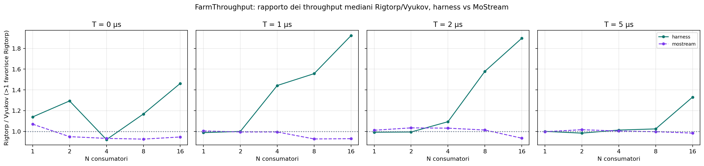
Communicator vecchio (viola). Nell'harness Rigtorp arriva quasi a 1,9×; dentro MoStream la curva resta piatta intorno a 1.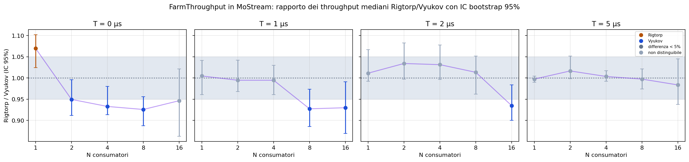
Esiti con il Communicator vecchio: Rigtorp: 1, Vyukov: 4, differenza < 5%: 2, non distinguibile: 13. Con quello nuovo: Vyukov: 8, differenza < 5%: 3, non distinguibile: 9.
| N | T µs | Harness (code chiamate direttamente) | MoStream, Communicator vecchio | MoStream, Communicator nuovo | ||||||
|---|---|---|---|---|---|---|---|---|---|---|
| R/V | IC 95% | esito | R/V | IC 95% | esito | R/V | IC 95% | esito | ||
| 1 | 0 | 1,14 | — | nessuna coda | 0,86 | 0,82–0,90 | Vyukov | 0,81 | 0,79–0,83 | Vyukov |
| 2 | 0 | 0,79 | 0,70–0,92 | Vyukov | 0,85 | 0,81–0,89 | Vyukov | 0,75 | 0,70–0,78 | Vyukov |
| 4 | 0 | 0,95 | 0,91–1,01 | non distinguibile | 0,97 | 0,88–1,03 | non distinguibile | 0,85 | 0,72–0,96 | Vyukov |
| 8 | 0 | 0,91 | 0,87–0,97 | Vyukov | 0,94 | 0,90–0,99 | Vyukov | 0,83 | 0,78–0,87 | Vyukov |
| 16 | 0 | 0,90 | 0,83–0,96 | Vyukov | 0,94 | 0,89–0,99 | Vyukov | 0,81 | 0,78–0,87 | Vyukov |
| 1 | 1 | 1,01 | — | nessuna coda | 1,03 | 1,00–1,05 | differenza < 5% | 0,93 | 0,91–0,96 | Vyukov |
| 2 | 1 | 1,13 | 1,04–1,19 | Rigtorp | 0,99 | 0,97–1,03 | non distinguibile | 0,91 | 0,87–0,97 | Vyukov |
| 4 | 1 | 1,11 | 1,01–1,17 | Rigtorp | 1,06 | 0,99–1,12 | non distinguibile | 0,98 | 0,92–1,03 | non distinguibile |
| 8 | 1 | 1,12 | 1,06–1,19 | Rigtorp | 1,10 | 0,99–1,20 | non distinguibile | 0,97 | 0,91–1,01 | non distinguibile |
| 16 | 1 | 0,90 | 0,86–0,96 | Vyukov | 1,00 | 0,97–1,03 | non distinguibile | 0,83 | 0,79–0,86 | Vyukov |
| 1 | 2 | 1,00 | — | nessuna coda | 1,02 | 0,99–1,05 | non distinguibile | 0,97 | 0,94–1,00 | differenza < 5% |
| 2 | 2 | 1,10 | 1,01–1,15 | Rigtorp | 1,03 | 1,00–1,05 | differenza < 5% | 0,98 | 0,94–1,01 | non distinguibile |
| 4 | 2 | 0,90 | 0,86–0,98 | Vyukov | 1,01 | 0,96–1,08 | non distinguibile | 0,95 | 0,90–1,01 | non distinguibile |
| 8 | 2 | 0,94 | 0,91–0,98 | Vyukov | 1,07 | 1,00–1,19 | Rigtorp | 0,96 | 0,90–1,06 | non distinguibile |
| 16 | 2 | 1,09 | 1,06–1,12 | Rigtorp | 1,07 | 0,94–1,17 | non distinguibile | 0,96 | 0,90–1,00 | non distinguibile |
| 1 | 5 | 1,00 | — | nessuna coda | 1,00 | 0,99–1,02 | non distinguibile | 0,99 | 0,97–1,00 | differenza < 5% |
| 2 | 5 | 0,97 | 0,96–0,98 | differenza < 5% | 1,01 | 1,00–1,02 | non distinguibile | 0,97 | 0,96–0,99 | differenza < 5% |
| 4 | 5 | 0,94 | 0,90–0,98 | Vyukov | 1,05 | 0,97–1,09 | non distinguibile | 0,95 | 0,89–1,00 | non distinguibile |
| 8 | 5 | 0,94 | 0,91–0,97 | Vyukov | 1,09 | 0,97–1,13 | non distinguibile | 0,94 | 0,90–1,05 | non distinguibile |
| 16 | 5 | 0,95 | 0,92–0,99 | differenza < 5% | 1,09 | 0,96–1,25 | non distinguibile | 0,93 | 0,83–1,06 | non distinguibile |
Come sopra. Nell'harness con N = 1 non ci sono code (baseline seriale), quindi non c'è confronto.
Communicator vecchio Rigtorp perdeva soprattutto con T = 0 (0,85–0,86 con N = 1–2), cioè dove conta di più il costo di ogni estrazione. Con quello nuovo resta dietro a Vyukov: il nuovo protocollo aiuta entrambe le code, ma senza contesa Vyukov ne trae più vantaggio (capitolo 8).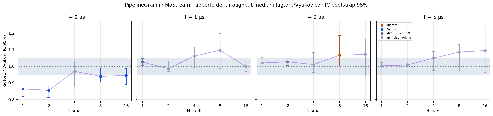
Communicator vecchio la sua integrazione non portava alcun beneficio misurabile, e con contesa era leggermente peggiore.Il Communicator originale non chiamava mai il pop bloccante della coda: CommunicationQueue non lo esponeva nemmeno. Communicator.pop() era un ciclo su try_pop(). La ragione è il protocollo di fine stream:
closed;Con il pop bloccante di Rigtorp questo schema non funziona. Il consumatore prende un ticket e aspetta che proprio quella cella venga riempita; se i dati sono finiti nessuno la riempirà mai, e il consumatore resta bloccato senza poter controllare il flag. Per questo l'integrazione di Rigtorp aveva mantenuto il try_pop, rinunciando al fetch_add.
L'ipotesi è stata verificata in due passi:
MoStream/pipeline_blocking.mojo), senza toccare il runtime, la stessa campagna ha mostrato che con il pop bloccante il vantaggio di Rigtorp sotto contesa ricompare;Communicator del runtime. La campagna ripetuta dà gli stessi numeri del prototipo: il rapporto dei throughput mediani è 1,008 in entrambi i benchmark.Il Communicator ha ora un parametro di compilazione, Communicator[T, explicit_eos: Bool = False], che sceglie fra due protocolli. Il compilatore genera due versioni separate, quindi a runtime non c'è nessun if.
| explicit_eos = True ( Pipeline.run(), runtime standard) | explicit_eos = False ( run_cooperative(), invariato) | |
|---|---|---|
pop() | pop bloccante della coda (Rigtorp: fetch_add) | ciclo su try_pop |
| Fine stream | l'ultimo produttore alza closed e inserisce cN EOS, uno per consumatore | l'ultimo produttore alza closed; i consumatori costruiscono l'EOS da soli |
| Perché | ogni stadio ha il suo thread dedicato: bloccarsi su pop è naturale | un attore non può bloccare un worker dello scheduler, che usa is_closed() per parcheggiarlo e risvegliarlo |
def producer_finished(mut self):
# Decrementa atomicamente i produttori attivi e legge il valore precedente.
# ACQUIRE_RELEASE: i push di questo produttore sono visibili a chi decrementa
# dopo, e l'ultimo produttore vede i push di tutti gli altri.
var old_count = self.remainingProducers[].fetch_sub[ordering=Ordering.ACQUIRE_RELEASE](1)
# Se valeva 1, questo era l'ultimo produttore:
if old_count == Int64(1):
# alza il flag di chiusura PRIMA di inserire gli EOS. Appena l'ultimo
# consumatore riceve il proprio EOS può distruggere il communicator,
# quindi l'ultimo push di EOS deve essere l'ultimo accesso del produttore.
# RELEASE: chi legge il flag a 1 vede tutto ciò che è stato fatto prima.
self.closed[].store[ordering=Ordering.RELEASE](Int64(1))
# Solo nella modalità con EOS espliciti (scelta in compilazione):
comptime if Self.explicit_eos:
# inserisce un EOS per ogni consumatore;
for _ in range(self.consNum):
# push bloccante: se la coda è piena aspetta che i consumatori la svuotino.
self.queue[].push(MessageWrapper[Self.T](eos=True)) def pop(mut self) -> MessageWrapper[Self.T]:
# Modalità con EOS espliciti (scelta in compilazione, nessun if a runtime):
comptime if Self.explicit_eos:
# pop bloccante della coda (per Rigtorp: ticket con fetch_add).
return self.queue[].pop()
# Modalità classica: ripete senza fermarsi
while True:
# un tentativo di estrazione non bloccante;
var maybe_msg = self.try_pop()
# se ha ottenuto un messaggio (dato oppure EOS costruito localmente)
if maybe_msg:
# lo estrae dall'Optional e lo restituisce.
return maybe_msg.take()push prima di chiamare producer_finished(). Il fetch_sub con ordinamento ACQUIRE_RELEASE garantisce che l'ultimo produttore veda già fatti i push di tutti gli altri, quindi gli EOS prendono posizioni successive.Due dettagli di implementazione:
closed viene alzato prima di inserire gli EOS, non dopo. Appena l'ultimo consumatore riceve il suo EOS libera il communicator. Se il produttore scrivesse il flag dopo l'ultimo push, potrebbe scrivere in memoria già liberata.pN = 0). Nessuno inserirebbe gli EOS, quindi li inserisce il costruttore. Se non ci stanno nella coda, la costruzione viene rifiutata, perché un push su coda piena resterebbe bloccato prima che i consumatori partano.communication_queue.mojo | aggiunto pop(), che chiama il pop bloccante della coda scelta |
communicator.mojo | parametro explicit_eos; pop(), producer_finished() e costruttore come sopra; commenti in italiano |
standard_runtime.mojo, emitter.mojo | i tipi diventano Communicator[..., True]; il codice dei cicli non cambia |
pipeline.mojo | run() crea communicator con EOS espliciti; run_cooperative() invariato; una riga di log con il protocollo attivo |
Gli stadi TRANSFORM_MANY, l'Emitter e il runtime cooperativo funzionano come prima.
| Test di integrazione del runtime | 144 configurazioni superate: Vyukov e Rigtorp, topologie farm e MPMC, runtime standard e cooperativo, 1/2/4 worker, 0/1/2003 messaggi (anche stream vuoto), capacità 2 e 16. Verifica che ogni messaggio arrivi esattamente una volta. |
| Stress della terminazione | 1.600 esecuzioni senza errori né blocchi (timeout 30 s ciascuna): code 1:16 con capacità 2, un solo messaggio con 16 consumatori, catene di 18 stadi, code N:N con più produttori (farm_mpmc). |
| Test di esempio | output identico al runtime originale per test_pipe_1, test_pipe_2 (TRANSFORM_MANY) e test_pipe_3_coop; test_pipe_3 verificato sulla somma totale fra i sink (1.001.000), che anche nel runtime originale si distribuisce in modo variabile fra i sink. |
| ImagePipeline | pipeline con stadi TRANSFORM_MANY replicati: termina correttamente. |
| FarmThroughput | PipelineGrain | |
|---|---|---|
| Topologia | seq(Source) → parallel(FarmWorker, N): una coda 1:N | Source → N stadi seq → Sink: N+1 code 1:1 |
| Uso della coda | SPMC: un produttore, N consumatori. Contesa fra i consumatori sul pop | SPSC: un produttore, un consumatore per coda. Nessuna contesa |
| Lavoro T | per input, eseguito da un solo consumatore | totale per input, diviso fra gli N stadi |
| Griglia | N = 1, 2, 4, 8, 16; T = 0, 1, 2, 5 µs; 50.000 input; capacità 1024; 50 ripetizioni; pinning su core fisici distinti | |
Pipeline.run(), dopo un warm-up. Throughput = input / tempo. Dopo il cronometro si verifica che ogni input sia stato elaborato esattamente una volta e con il risultato corretto.Communicator originale, 5 novembre) e dopo (Communicator nuovo, 6 novembre). Come riferimento c'è l'harness del 15 ottobre, con le code chiamate direttamente, che misura il costo minimo della comunicazione e non è un'alternativa a MoStream.Nota sulla frequenza della CPU. La prima esecuzione della FarmThroughput con il nuovo Communicator è stata scartata. La calibrazione è avvenuta mentre la CPU era in turbo (1,64 ns per iterazione invece dei soliti 2,87), e ogni input ha ricevuto 1,76 volte il lavoro previsto. La campagna è stata ripetuta con calibrazione normale, identica a quella delle altre campagne (2,874 ns per iterazione). Per le prossime campagne conviene fissare la frequenza: turbo disattivato e governor performance.
Una sorgente e N consumatori condividono una sola coda: è il caso con contesa fra i consumatori, cioè quello in cui il fetch_add di Rigtorp dovrebbe aiutare.
Esiti statistici Rigtorp contro Vyukov: prima Rigtorp: 1, Vyukov: 6, non distinguibile: 13; dopo Rigtorp: 7, Vyukov: 1, differenza < 5%: 1, non distinguibile: 11.
| N | T µs | Vyukov (M input/s) | Rigtorp (M input/s) | Rigtorp / Vyukov, nuovo Communicator | Migliore | |||||||
|---|---|---|---|---|---|---|---|---|---|---|---|---|
| prima | dopo | Δ | prima | dopo | Δ | R/V | IC 95% | vinte R | esito | |||
| 1 | 0 | 1,64 | 2,15 | +32% | 1,75 | 2,23 | +27% | 1,03 | 0,99–1,09 | 28/50 | non distinguibile | R |
| 1 | 1 | 0,50 | 0,53 | +7% | 0,50 | 0,53 | +6% | 0,99 | 0,96–1,02 | 23/50 | non distinguibile | V |
| 1 | 2 | 0,33 | 0,34 | +5% | 0,33 | 0,34 | +4% | 1,00 | 0,98–1,01 | 25/50 | non distinguibile | V |
| 1 | 5 | 0,17 | 0,18 | +2% | 0,17 | 0,18 | +3% | 1,00 | 0,99–1,01 | 22/50 | non distinguibile | V |
| 2 | 0 | 1,66 | 1,89 | +14% | 1,58 | 1,63 | +3% | 0,86 | 0,82–0,91 | 15/50 | Vyukov | V |
| 2 | 1 | 0,79 | 0,83 | +6% | 0,78 | 0,85 | +9% | 1,03 | 0,99–1,06 | 29/50 | non distinguibile | R |
| 2 | 2 | 0,50 | 0,54 | +7% | 0,52 | 0,55 | +5% | 1,02 | 1,01–1,04 | 30/50 | differenza < 5% | R |
| 2 | 5 | 0,29 | 0,30 | +3% | 0,30 | 0,30 | +3% | 1,01 | 1,00–1,05 | 32/50 | non distinguibile | R |
| 4 | 0 | 1,47 | 1,53 | +4% | 1,37 | 1,51 | +10% | 0,98 | 0,93–1,05 | 24/50 | non distinguibile | V |
| 4 | 1 | 1,18 | 1,24 | +5% | 1,17 | 1,40 | +20% | 1,13 | 1,08–1,16 | 39/50 | Rigtorp | R |
| 4 | 2 | 0,77 | 0,80 | +5% | 0,79 | 0,82 | +4% | 1,02 | 0,97–1,07 | 28/50 | non distinguibile | R |
| 4 | 5 | 0,43 | 0,44 | +2% | 0,43 | 0,44 | +2% | 1,01 | 0,99–1,02 | 30/50 | non distinguibile | R |
| 8 | 0 | 1,25 | 1,27 | +2% | 1,16 | 1,50 | +29% | 1,17 | 1,11–1,25 | 34/50 | Rigtorp | R |
| 8 | 1 | 1,30 | 1,31 | +1% | 1,21 | 1,70 | +41% | 1,30 | 1,18–1,40 | 44/50 | Rigtorp | R |
| 8 | 2 | 1,14 | 1,20 | +6% | 1,15 | 1,31 | +14% | 1,09 | 1,04–1,15 | 37/50 | Rigtorp | R |
| 8 | 5 | 0,64 | 0,65 | +2% | 0,64 | 0,66 | +3% | 1,01 | 0,98–1,04 | 25/50 | non distinguibile | R |
| 16 | 0 | 1,03 | 1,01 | −1% | 0,97 | 1,43 | +47% | 1,41 | 1,30–1,48 | 44/50 | Rigtorp | R |
| 16 | 1 | 1,07 | 1,03 | −4% | 0,99 | 1,53 | +54% | 1,49 | 1,39–1,58 | 47/50 | Rigtorp | R |
| 16 | 2 | 1,05 | 1,06 | +1% | 0,98 | 1,56 | +59% | 1,47 | 1,31–1,55 | 43/50 | Rigtorp | R |
| 16 | 5 | 0,96 | 0,97 | +1% | 0,95 | 0,95 | +0% | 0,98 | 0,92–1,01 | 23/50 | non distinguibile | V |
Throughput mediano in milioni di input/s. Δ = dopo/prima per la stessa coda. R/V > 1 favorisce Rigtorp; esito in arancione = vince Rigtorp, in blu = vince Vyukov.
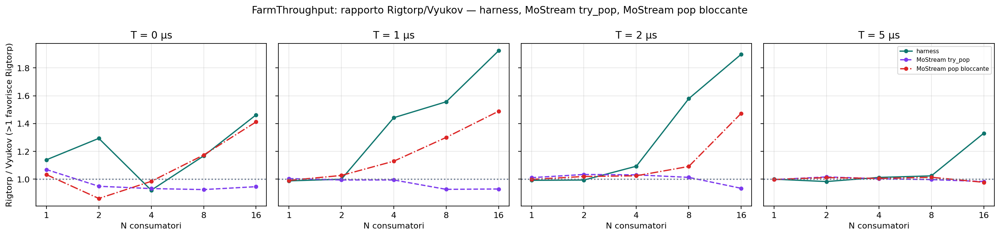
try_pop (viola), MoStream dopo con il nuovo Communicator (rosso, in legenda «pop bloccante»).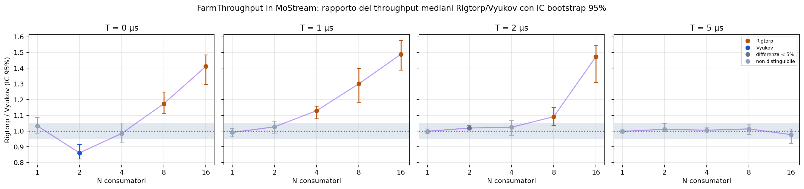
Communicator: rapporto Rigtorp/Vyukov con intervallo di confidenza al 95%. La banda grigia è ±5%; i punti sono colorati in base all'esito.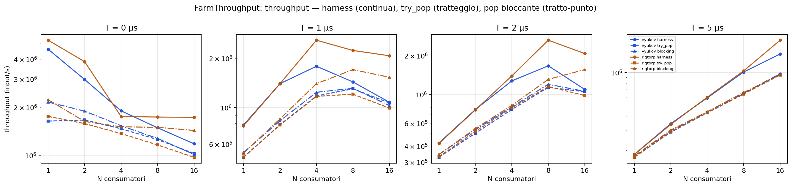
Speedup = throughput con N consumatori / throughput con N = 1, nella stessa campagna e con la stessa coda.
| Coda | N | T = 1 µs | T = 2 µs | T = 5 µs | ||||||
|---|---|---|---|---|---|---|---|---|---|---|
| harness | prima | dopo | harness | prima | dopo | harness | prima | dopo | ||
| Vyukov | 2 | 1,79 | 1,58 | 1,56 | 1,82 | 1,54 | 1,56 | 1,89 | 1,68 | 1,69 |
| Vyukov | 4 | 2,28 | 2,37 | 2,33 | 3,03 | 2,35 | 2,34 | 3,23 | 2,50 | 2,48 |
| Vyukov | 8 | 1,83 | 2,62 | 2,47 | 3,96 | 3,48 | 3,50 | 5,51 | 3,70 | 3,67 |
| Vyukov | 16 | 1,38 | 2,15 | 1,93 | 2,60 | 3,22 | 3,08 | 8,00 | 5,57 | 5,49 |
| Rigtorp | 2 | 1,81 | 1,57 | 1,62 | 1,82 | 1,57 | 1,59 | 1,86 | 1,71 | 1,71 |
| Rigtorp | 4 | 3,33 | 2,34 | 2,66 | 3,34 | 2,39 | 2,40 | 3,27 | 2,52 | 2,50 |
| Rigtorp | 8 | 2,88 | 2,42 | 3,23 | 6,30 | 3,49 | 3,82 | 5,64 | 3,70 | 3,73 |
| Rigtorp | 16 | 2,68 | 1,99 | 2,91 | 4,97 | 2,97 | 4,55 | 10,63 | 5,49 | 5,38 |
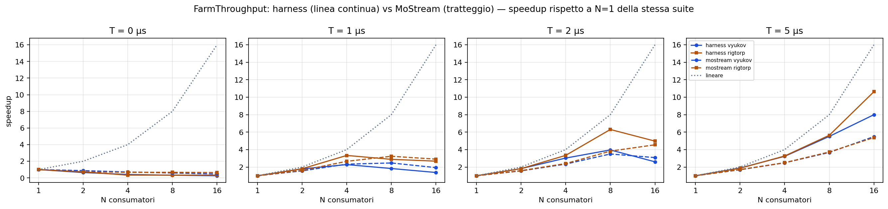
Communicator (tratteggio). La retta punteggiata è lo speedup lineare.Una catena di stadi sequenziali: tutte le code sono 1:1, quindi non c'è contesa. Il lavoro totale T è diviso fra gli stadi.
Esiti statistici Rigtorp contro Vyukov: prima Rigtorp: 1, Vyukov: 4, differenza < 5%: 2, non distinguibile: 13; dopo Vyukov: 8, differenza < 5%: 3, non distinguibile: 9.
| N | T µs | Vyukov (M input/s) | Rigtorp (M input/s) | Rigtorp / Vyukov, nuovo Communicator | Migliore | |||||||
|---|---|---|---|---|---|---|---|---|---|---|---|---|
| prima | dopo | Δ | prima | dopo | Δ | R/V | IC 95% | vinte R | esito | |||
| 1 | 0 | 1,05 | 1,30 | +24% | 0,91 | 1,05 | +16% | 0,81 | 0,79–0,83 | 8/50 | Vyukov | V |
| 1 | 1 | 0,47 | 0,51 | +8% | 0,49 | 0,48 | −2% | 0,93 | 0,91–0,96 | 12/50 | Vyukov | V |
| 1 | 2 | 0,33 | 0,34 | +5% | 0,33 | 0,33 | +0% | 0,97 | 0,94–1,00 | 17/50 | differenza < 5% | V |
| 1 | 5 | 0,17 | 0,17 | +1% | 0,17 | 0,17 | −0% | 0,99 | 0,97–1,00 | 15/50 | differenza < 5% | V |
| 2 | 0 | 1,04 | 1,33 | +27% | 0,89 | 0,99 | +11% | 0,75 | 0,70–0,78 | 10/50 | Vyukov | V |
| 2 | 1 | 0,60 | 0,65 | +9% | 0,59 | 0,59 | +1% | 0,91 | 0,87–0,97 | 12/50 | Vyukov | V |
| 2 | 2 | 0,43 | 0,45 | +6% | 0,44 | 0,45 | +2% | 0,98 | 0,94–1,01 | 16/50 | non distinguibile | V |
| 2 | 5 | 0,26 | 0,27 | +4% | 0,26 | 0,27 | +1% | 0,97 | 0,96–0,99 | 14/50 | differenza < 5% | V |
| 4 | 0 | 0,90 | 1,05 | +16% | 0,88 | 0,89 | +1% | 0,85 | 0,72–0,96 | 15/50 | Vyukov | V |
| 4 | 1 | 0,59 | 0,70 | +19% | 0,63 | 0,69 | +10% | 0,98 | 0,92–1,03 | 21/50 | non distinguibile | V |
| 4 | 2 | 0,48 | 0,56 | +16% | 0,49 | 0,53 | +9% | 0,95 | 0,90–1,01 | 17/50 | non distinguibile | V |
| 4 | 5 | 0,33 | 0,36 | +11% | 0,34 | 0,34 | +1% | 0,95 | 0,89–1,00 | 16/50 | non distinguibile | V |
| 8 | 0 | 0,82 | 0,99 | +21% | 0,77 | 0,82 | +7% | 0,83 | 0,78–0,87 | 11/50 | Vyukov | V |
| 8 | 1 | 0,58 | 0,73 | +27% | 0,63 | 0,71 | +12% | 0,97 | 0,91–1,01 | 23/50 | non distinguibile | V |
| 8 | 2 | 0,53 | 0,61 | +15% | 0,57 | 0,59 | +4% | 0,96 | 0,90–1,06 | 22/50 | non distinguibile | V |
| 8 | 5 | 0,38 | 0,46 | +20% | 0,41 | 0,43 | +4% | 0,94 | 0,90–1,05 | 25/50 | non distinguibile | V |
| 16 | 0 | 0,80 | 0,97 | +22% | 0,75 | 0,79 | +5% | 0,81 | 0,78–0,87 | 7/50 | Vyukov | V |
| 16 | 1 | 0,73 | 0,87 | +19% | 0,73 | 0,73 | −1% | 0,83 | 0,79–0,86 | 9/50 | Vyukov | V |
| 16 | 2 | 0,55 | 0,70 | +28% | 0,59 | 0,67 | +15% | 0,96 | 0,90–1,00 | 19/50 | non distinguibile | V |
| 16 | 5 | 0,45 | 0,55 | +23% | 0,49 | 0,52 | +5% | 0,93 | 0,83–1,06 | 19/50 | non distinguibile | V |
Throughput mediano in milioni di input/s. Δ = dopo/prima per la stessa coda. R/V > 1 favorisce Rigtorp.
closed e rifare un try_pop.fetch_add SEQUENTIAL non porta vantaggi. Un'ipotesi plausibile, non verificata, è che il consumatore prenda il ticket in anticipo e poi aspetti proprio sulla cella che il produttore sta scrivendo, facendo rimbalzare la stessa linea di cache fra i due core.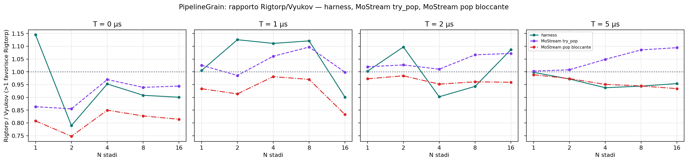
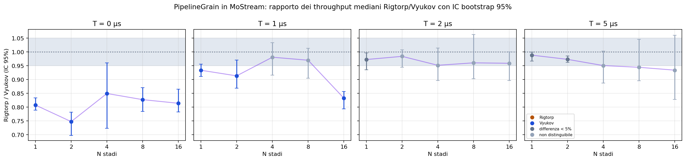
Communicator: rapporto Rigtorp/Vyukov con intervallo di confidenza al 95%.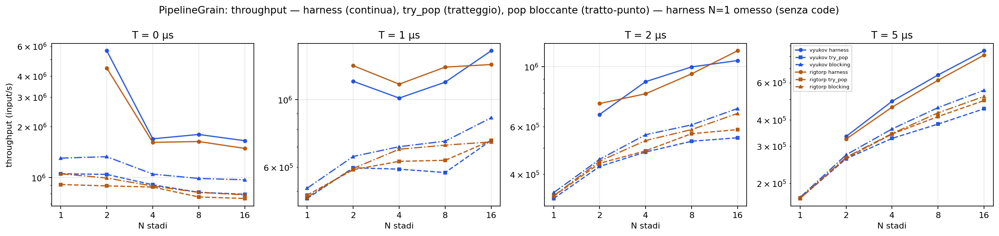
Speedup = throughput / throughput seriale senza code (N = 1 dell'harness), lo stesso riferimento per tutte le campagne.
| Coda | N | T = 1 µs | T = 2 µs | T = 5 µs | ||||||
|---|---|---|---|---|---|---|---|---|---|---|
| harness | prima | dopo | harness | prima | dopo | harness | prima | dopo | ||
| Vyukov | 2 | 1,12 | 0,58 | 0,63 | 1,31 | 0,84 | 0,90 | 1,65 | 1,30 | 1,35 |
| Vyukov | 4 | 0,98 | 0,57 | 0,68 | 1,74 | 0,95 | 1,11 | 2,43 | 1,62 | 1,79 |
| Vyukov | 8 | 1,11 | 0,56 | 0,71 | 1,97 | 1,05 | 1,20 | 3,23 | 1,89 | 2,26 |
| Vyukov | 16 | 1,41 | 0,71 | 0,85 | 2,08 | 1,08 | 1,38 | 4,21 | 2,23 | 2,74 |
| Rigtorp | 2 | 1,25 | 0,57 | 0,57 | 1,44 | 0,86 | 0,88 | 1,61 | 1,31 | 1,32 |
| Rigtorp | 4 | 1,09 | 0,61 | 0,66 | 1,56 | 0,96 | 1,05 | 2,28 | 1,70 | 1,71 |
| Rigtorp | 8 | 1,24 | 0,61 | 0,68 | 1,85 | 1,11 | 1,15 | 3,06 | 2,06 | 2,14 |
| Rigtorp | 16 | 1,26 | 0,71 | 0,70 | 2,25 | 1,15 | 1,32 | 4,03 | 2,45 | 2,56 |
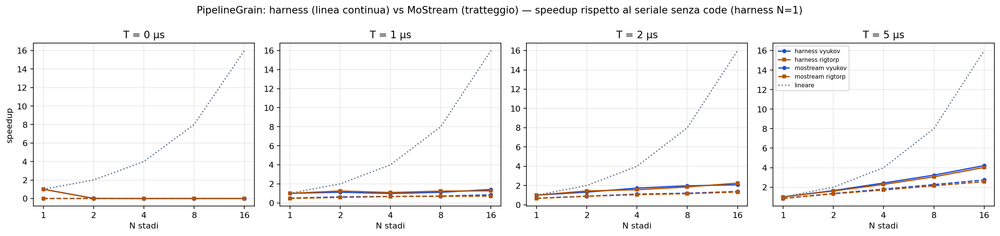
Communicator (tratteggio).Communicator usava try_pop. Con gli EOS espliciti e il pop bloccante il vantaggio sotto contesa ricompare.Communicator che scelga la coda per ogni canale in base a pN e cN.push → pop → consume.| Benchmark e runner | Benchmarks/MoStreamSynthetic/FarmThroughput/, …/PipelineGrain/ (run.py, sorgenti Mojo) |
| Campagna «prima» | Benchmarks/MoStreamSynthetic/campagna-50-20261105/ |
| Campagna «dopo» | Benchmarks/MoStreamSynthetic/campagna-50-explicit-eos-20261106/ (dati scartati per la calibrazione in turbo in FarmThroughput_calibrazione_turbo_SCARTATA/) |
| Prototipo | MoStream/pipeline_blocking.mojo e campagna-50-blocking-20261105/ |
| Analisi | analizza_rigtorp.py, confronta_pop.py, confronta_harness.py |
| Questa relazione | docs/Relazione_Communicator/genera_relazione.py: legge tutti i numeri dai CSV delle campagne |